Blog · Guías informativas
Guías y novedades
Montaje, packing y tendencias 2026: contenido práctico con enlaces a nuestro catálogo cuando toque elegir equipo.
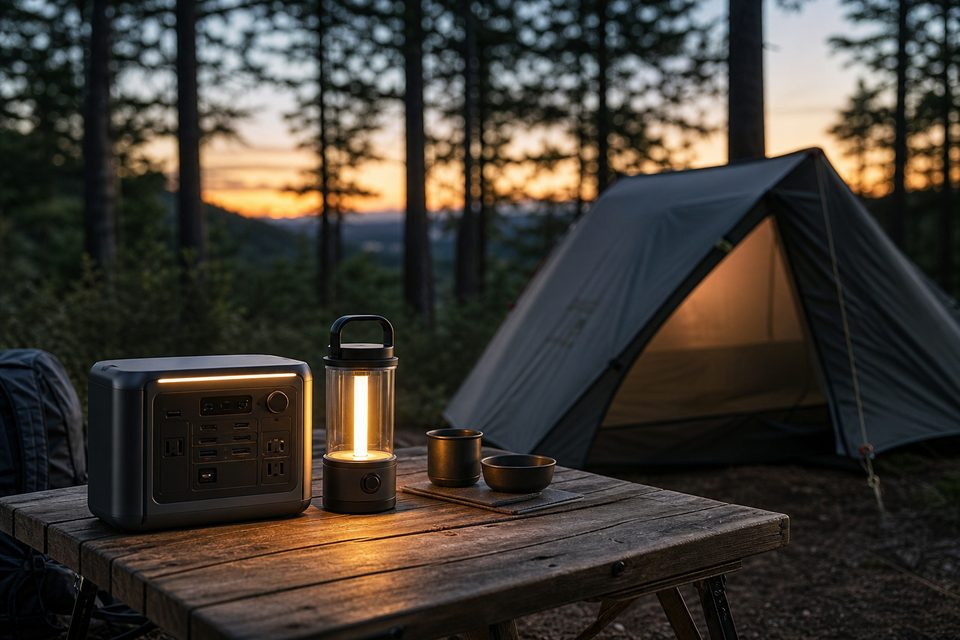
Tendencias de camping 2026: lo nuevo en equipo y tecnología
Novedades para camping en energía, luz, tiendas y ultraligero — qué merece la pena y qué es humo.
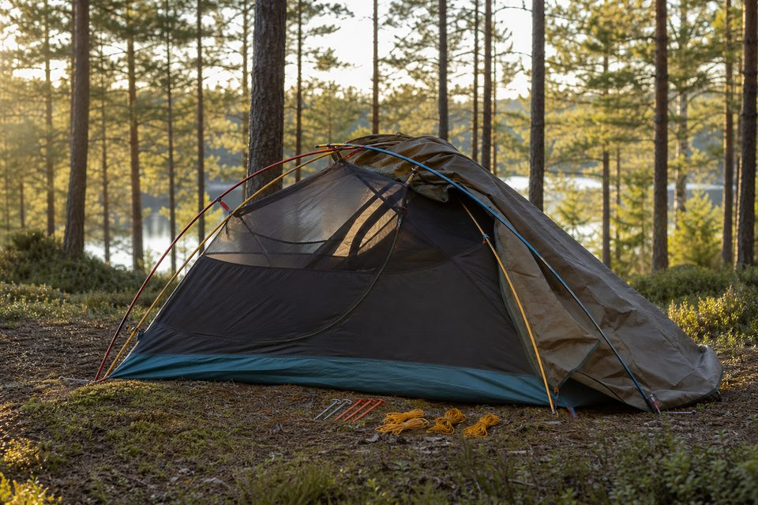
Cómo montar una tienda de campaña correctamente
Guía paso a paso: emplazamiento, varillas, flysheet, vientos y errores que dejan la tienda inestable.
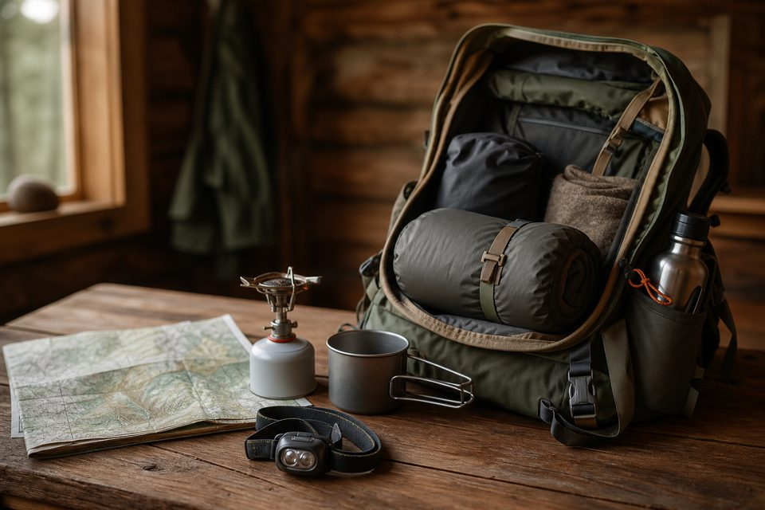
Checklist: qué llevar en tu mochila de camping
Lista definitiva para principiantes: dormir, cocina, luz y seguridad sin sobrecargar la mochila.
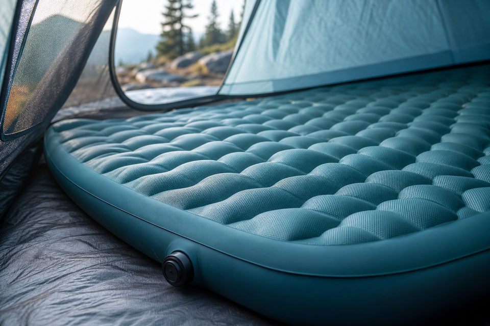
Qué R-Value necesita tu esterilla de camping
Tabla práctica por estación y errores al comprar aislamiento para el suelo.
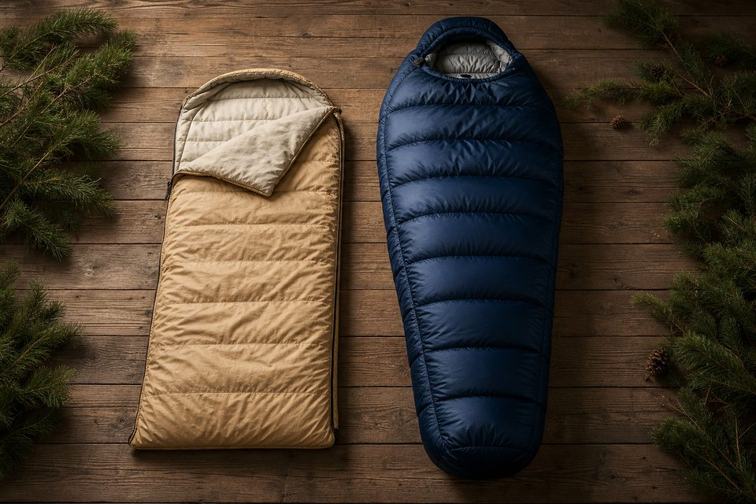
Saco verano vs invierno: cómo elegir
Temperatura de confort, sintético vs pluma y cuándo conviene tener dos sacos.
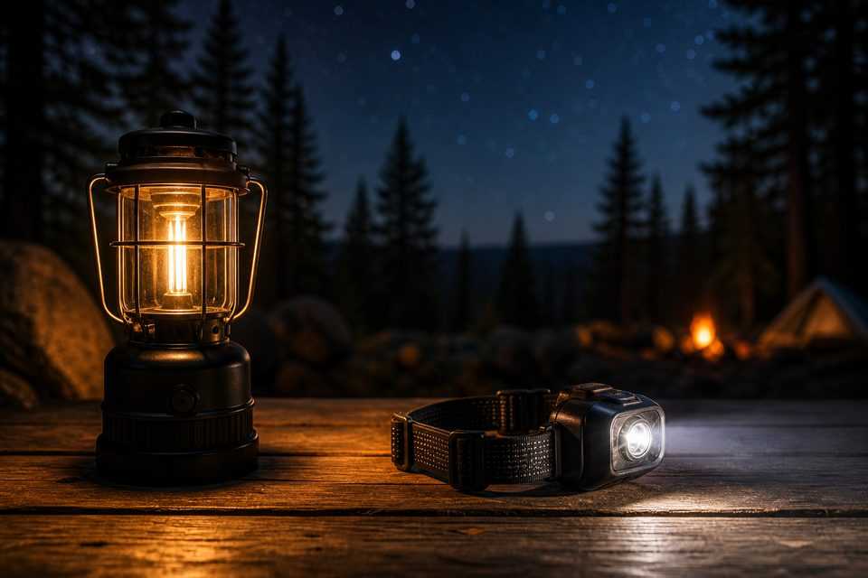
Farol o frontal para camping: qué elegir
Cuándo usar cada luz y el combo mínimo para no quedarte a oscuras en el campamento.
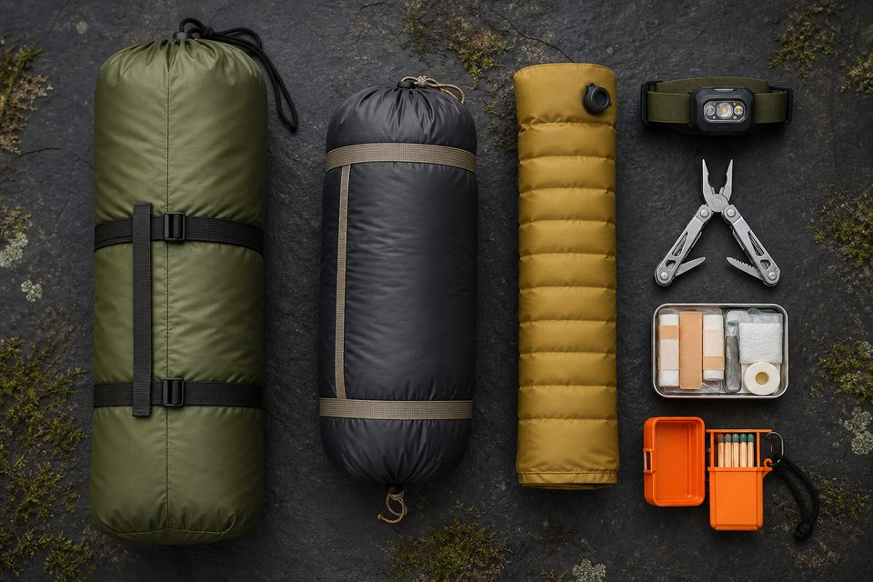
Checklist de la primera acampada
Lo imprescindible para no olvidar nada crítico en tu primera noche en tienda.
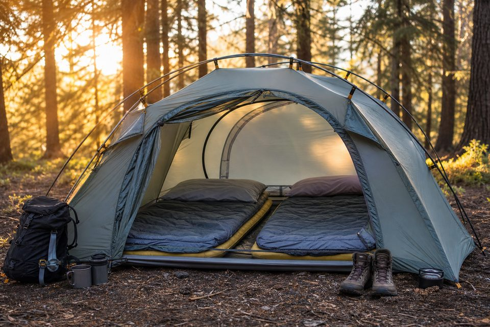
Mejor tienda de camping para 2 personas: guía de compra 2026
No hace falta la más cara: hace falta la que encaje con vuestro uso (fin de semana, mochila o coche). Criterios claros y enlaces a comparativas.
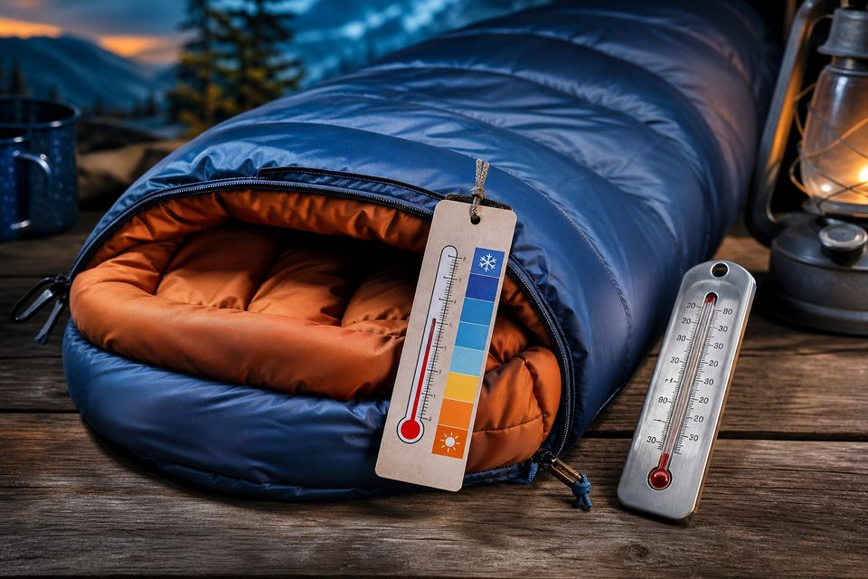
Cómo elegir un saco de dormir según la temperatura
La etiqueta engaña si solo miras el número más bajo. Aprende a leer confort / límite / extrema y elige sin pasar frío ni cargar de más.
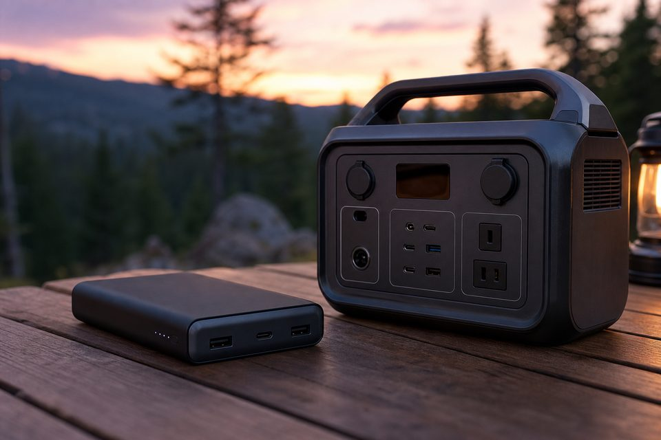
Power bank o estación de energía: qué necesitas en camping
No compres una estación de 10 kg si solo cargas el móvil. Ni un power bank mínimo si llevas nevera 12V. Aquí el criterio es simple.
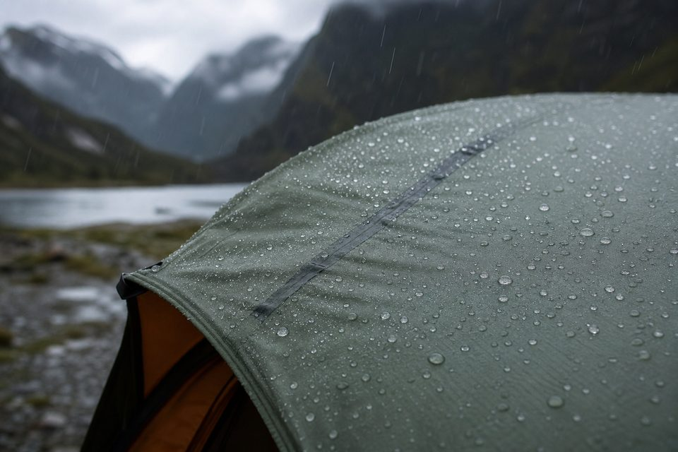
Columna de agua en tiendas de campaña: qué necesitas de verdad
Los “mm” de impermeabilidad se malinterpretan. Te explicamos rangos útiles y por qué el montaje importa tanto como el número.
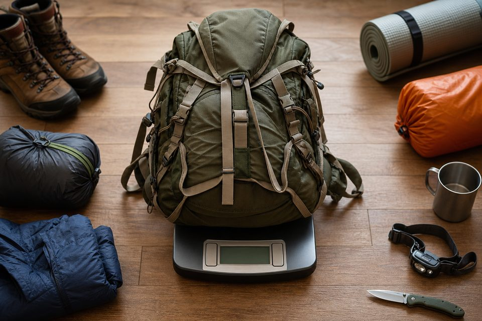
Peso de la mochila de camping: cuánto es razonable llevar
Una regla orientativa y una lista de lo que más engorda la mochila sin aportar seguridad.
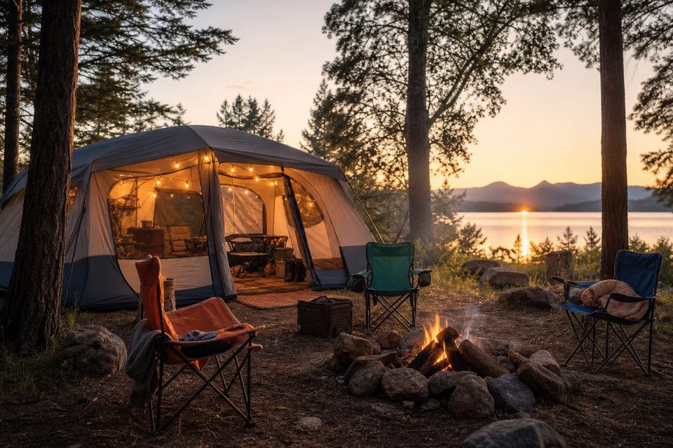
Camping con niños: equipo básico que sí compensa
Con niños gana el confort y la rutina. Menos gadgets, más espacio, luz y un plan B si llueve.
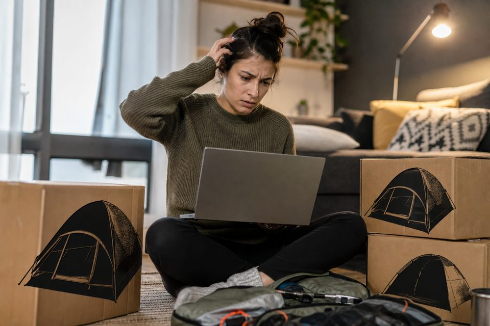
Errores al comprar una tienda de campaña en Amazon
Amazon es útil si sabes filtrar. Estos son los fallos que más dinero y noches malas generan.
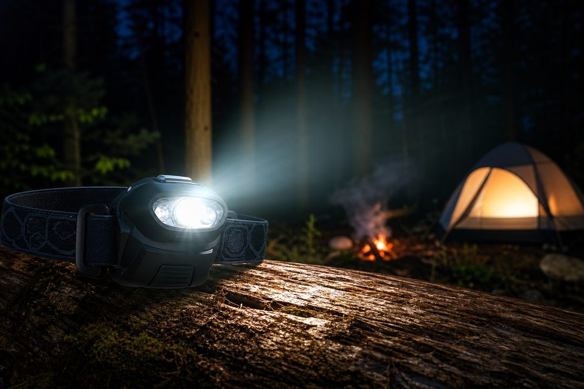
Frontal de camping: cuántos lúmenes necesitas de verdad
El lumen de marketing es el modo turbo de 30 segundos. Te damos rangos útiles y qué mirar además del número.
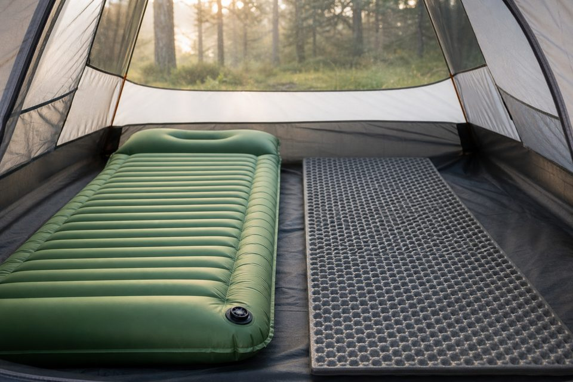
Esterilla inflable vs espuma: cuál te conviene
Una es más cómoda y compacta; la otra es a prueba de pinchazos. La mejor respuesta a veces es usar ambas.
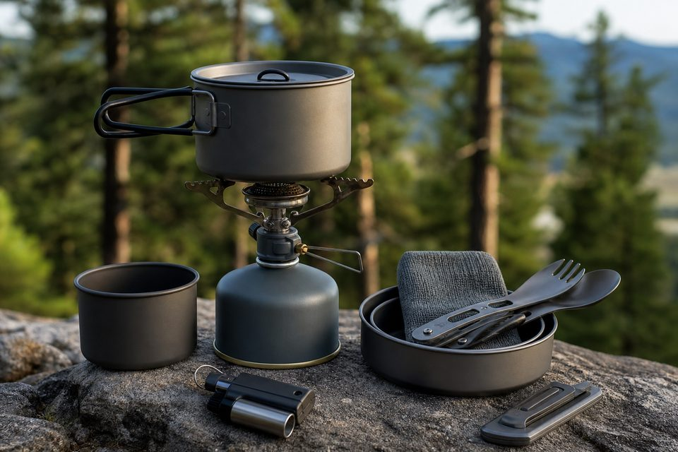
Kit de cocina para camping (principiantes): lo imprescindible
Con cuatro piezas bien elegidas comes caliente sin convertir la acampada en un mudanza.
Catálogo afiliado
¿Listo para elegir equipo?
El blog explica el cómo. Las comparativas y categorías te llevan a productos recomendados.
Guías Destacadas (rankings)
Top 5 y guías de compra con análisis de modelos.
Tiendas de campaña
Catálogo y enlaces a comparativas para pareja y familia.
Baterías y energía
Power banks y estaciones portátiles para acampada.
Iluminación
Linternas, frontales y faroles para ruta y campamento.